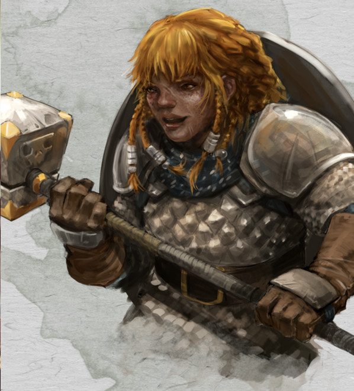

Guerrier nain niv 1
Urmora
Guerrier 1 (0 PX)
Nain des collines (f), neutre bon
Sauvageon (chasseuse)
[ CARACTÉRISTIQUES ]
For 14 (+2) Dex 12 (+1) Con 16 (+3)
Int 12 (+1) Sag 12 (+1) Cha 10 (+0)
[ MAÎTRISES ]
Bonus de maîtrise +2
Sauvegardes For +4, Con +5
Compétences Athlétisme +4, Perception +3, Perspicacité +3, Survie +3 (Perception passive 13)
Armes armes courantes, armes de guerre, hachette, hache d'armes, marteau léger, marteau de guerre
Armures toutes les armures, boucliers
Outils outils de maçon, cor
Langues commun, nain, draconique
[ COMBAT ]
pv 14 ; DV 1d10
Init +1 ; Vitesse 7,50 m
CA 18 (cotte de mailles 16, bouclier +2, Dex +0)
Marteau de guerre. Corps à corps : +4 (1d8+2 contondant ; polyvalente (1d10))
Arbalète légère. Distance : +3 (1d8+1 perforant ; munition (portée 24 m/96 m), chargement, à deux mains)
[ CAPACITÉS & TRAITS ]
Second souffle (1d10+1 pv/repos)
Style de combat (protection)
Vision dans le noir (18 m)
Résistance naine (AV aux JdS vs poison)
Entraînement aux armes naines *
Maîtrise des outils *
Connaissance de la pierre (bonus de maîtrise x2 aux jets d'Int (Histoire) en relation avec la pierre)
Robustesse naine (+1 pv/niveau) *
Vagabond
[ ÉQUIPEMENT ]
Marteau de guerre, arbalète légère, cotte de mailles, bouclier, 20 carreaux, sac à dos, pied-de-biche, marteau, piton (10), torche (10), boite d'allume-feu, rations/1 jour (10), gourde, corde en chanvre de 15 m, piège à mâchoires, vêtements de voyage, bourse, bâton, trophée
Coût de l'équipement 155.3 po ; Poids de l'équipement 78.75 kg
10 po
Poids des pièces 0.1 kg
[ PERSONNAGE ]
Taille M / 1,35 m / 70 kg ; Âge 20 ans (âge apparent 20)
Yeux bruns ; Peau rougie par le froid ; Cheveux roux
Trait Je garde un œil sur mes amis, comme s'ils étaient les langes d'un nouveau-né.
Je n'accorde pas d'importance aux riches ou aux gens bien-élevés. L'argent ou les bonnes manières ne sauveront personne face à un yéti affamé.
Idéal Honneur. Si je me déshonore, je déshonore l'ensemble de ma tribu.
Lien Ma famille, mon clan ou ma tribu, sont les choses les plus importantes dans ma vie, même lorsqu'ils sont loin de moi.
Défaut Je ne suis pas du tout résistant à la bière, au vin et autres boissons alcoolisées, et chaque jour on m'en fait boire.
Passé du personnage Urmora est une naine d'extérieur. Toujours pétillante, elle a un caractère bien forgé et protecteur. Urmora a tendance à materner un peu tout le monde, prenant beaucoup plus de risque que les autres. Pour ce qu'elle en sait, Urmora a toujours vécu dans le froid des montagnes, chassant pour nourrir le peuple. Elle défend les anciens, mais n'hésite pas à s'opposer à eux si elle est convaincue qu'ils ont tort. Jeune, elle a sauvé un bébé dragon blanc des griffes d'un yéti, aidée de beaucoup. Depuis, il arrive qu'on ne la voit plus pendant longtemps. En fait, elle est avec son ami dragon, essayant de repousser la nature mauvaise des dragons blancs.
[ ÉVOLUTION ]
Les suggestions ci-après sont en lien avec l'environnement glacial et l'instinct protecteur d'Urmora.
Au niveau 2, ajoutez la capacité Sursaut (ses pv passent à 24, ses DV à 2d10, et son Second souffle à 1d10+2).
Au niveau 3, choisissez l'archétype martial Chevalier occulte et ajoutez les capacités Lien avec une arme et Sorts : rayon de givre, lumière, poignard de glace, protection contre le mal et le bien, bouclier (ses pv passent à 34, ses DV à 3d10, et son Second souffle à 1d10+3).
Stat et histoire de Philechat